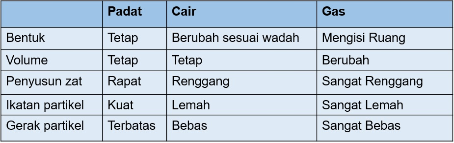

Pendidikan Sekolah Dasar Kelas 1 sampai 6
Kelas 1
Matematika
- Penjumlahan: 1 + 1 = 2
- Pengurangan: 3 - 1 = 2
Bahasa Indonesia
- Membaca: "Anak itu rajin belajar."
- Menulis: Menulis cerita tentang kegiatan sehari-hari.
IPA
- Pengenalan Hewan: Kucing, Anjing
- Pengenalan Tumbuhan: Pohon, Bunga
Kelas 2
Matematika
- Perkalian: 2 × 2 = 4
- Pembagian: 6 ÷ 3 = 2
Bahasa Indonesia
- Membaca: "Saya suka membaca buku cerita."
- Menulis: Menulis cerita pendek tentang liburan.
IPA
- Pencernaan: Proses pencernaan makanan dalam tubuh manusia.
- Energi: Jenis-jenis energi yang ada di sekitar kita.

Kelas 3
Matematika
- Bilangan Bulat: -3, -2, -1, 0, 1, 2, 3
- Pecahan Campuran: 1 ½, 2 ⅔

Bahasa Indonesia
- Puisi Sederhana: Menulis puisi dengan tema alam.
- Kalimat Majemuk: Menggabungkan dua kalimat menjadi satu kalimat majemuk.
IPA
- Cahaya: Sifat-sifat cahaya dan penerapannya dalam kehidupan sehari-hari.
- Sistem Tata Surya: Penjelasan tentang planet-planet dan matahari.
Kelas 4
Matematika
- Bilangan Pecahan: ½, ¼, ¾
- Bilangan Desimal: 0,5; 1,25
Bahasa Indonesia
- Cerpen: Menulis cerpen dengan tema persahabatan.
- Bahasa Indonesia Formal: Penggunaan bahasa Indonesia formal dalam pidato.
IPA
- Sifat-sifat Zat: Padat, cair, gas.
- Pencemaran Lingkungan: Jenis-jenis pencemaran dan dampaknya.

Kelas 5
Matematika
- Bilangan Bulat: -10, -5, 0, 5, 10
- Pecahan Campuran: 3 ½, 4 ⅔
Bahasa Indonesia
- Cerita Fiksi: Menulis cerita fiksi dengan tokoh-tokoh imajinatif.
- Kalimat Majemuk Bertingkat: Menggabungkan beberapa kalimat menjadi satu.
IPA
- Gaya, Gerak, dan Energi: Studi tentang gaya, gerak, dan energi dalam fisika.
- Struktur Atom: Pengetahuan tentang struktur atom dan unsur-unsurnya.
Kelas 6
Matematika
- Persamaan: x + 5 = 10
- Pertidaksamaan: 3x < 15
Bahasa Indonesia
- Puisi dan Prosa: Menganalisis puisi dan prosa dari karya sastra terkenal.
- Bahasa Indonesia Varian: Penggunaan bahasa Indonesia dengan variasi berbagai daerah.
IPA
- Hukum-hukum Fisika: Hukum-hukum dasar fisika dalam kehidupan sehari-hari.
- Evolusi dan Klasifikasi: Pengetahuan tentang evolusi makhluk hidup dan klasifikasinya.